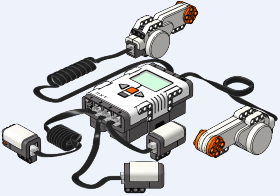

LSynth is a program that synthesizes bendable parts for LDraw files.
For information on LDraw, please visit
www.ldraw.org, the centralized LDraw
information site.
Features:
- Synthesizes flexible and rigid hoses, pneumatic hoses, ribbed tubes, electrical cables, fiber optic cables, and flexible axles.
- Synthesizes rubber bands, rubber belts, rubber tread, plastic tread, and chains.
- Synthesizes string, and string with plastic grips.
- Can be expanded with user generated synthesis types. Examine the lsynth.mpd file for instructions.
Instructions:
- Download a package for your OS.
- Follow the setup instructions and tutorials.
- Examine these detailed examples.
Then make your own. Have Fun!
LEGO® and the LEGO logo are registered trademarks of The Lego Group, which
does not sponsor, endorse, or authorize this site. You can find the official
LEGO website at http://www.lego.com.